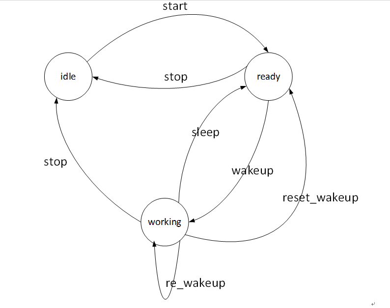

5.3 AIUI状态¶
5.3.1 Msg&Event¶
Message
msgType（消息类型） 取值 返回 CMD_GET_STATE 1 有 CMD_RESET 4 无 CMD_START 5 无 CMD_STOP 6 无 CMD_WAKEUP 7 无 CMD_RESET_WAKEUP 8 无
Event
EVENT_STATE 3 EVENT_WAKEUP 4 EVENT_SLEEP 5
5.3.2 状态转换¶
AIUI内部具有三种工作状态：STATE_IDLE（空闲）、STATE_READY（就绪）和STATE_WORKING（工作）， 状态转换关系如下：
{kind=link}
| 状态名称 | 说明
|
| STATE_IDLE | 服务未开启
此时只能进行start（开启服务）操作。
|
| STATE_READY | 就绪，等待用户唤醒状态
此时可以通过语音（唤醒词）或者直接向服务发送CMD_WAKEUP消息唤醒服务。
调用AIUIAgent.createAgent创建对象之后，服务即为就绪状态。
|
| STATE_WORKING | 唤醒后，服务进入工作状态
此时可以输入语音、文本与AIUI后台进行交互。
|
| 操作名称 | 说明
|
| start | 启动后默认状态或者向SDK发送CMD_START消息。
|
| stop | 向SDK发送CMD_STOP消息。
|
| wakeup | 说出定制唤醒词（默认为“叮咚叮咚”），或者向SDK发送CMD_WAKEUP消息。
|
| reset_wakeup | 向SDK发送CMD_RESET_WAKEUP消息。
|
| sleep | 休眠，当一段时间内无有效交互（语义）发生。
|
| re_wakeup | 在STATE_WORKING状态下，再次说出唤醒词，或者向SDK发送CMD_WAKEUP消息。
|
5.3.3 状态查询¶
通过构造CMD_GET_STATE查询消息发送给AIUI，AIUI会返通过EVENT_STATE事件将当前状态返回，
EVENT_STATE事件的arg1参数表示状态值有如下取值：
- 1 => STATE_IDLE（空闲状态）、
- 2 => STATE_READY（就绪状态，待唤醒）、
- 3 => STATE_WORKING（工作状态，已唤醒）
5.3.4 打开和关闭¶
通过CMD_START、CMD_STOP控制AIUI启动和停止。
AIUI在停止状态下没有任何操作，此时功耗也是最低，
停止状态下不能唤醒，需要通过CMD_START进入就绪状态才能唤醒。
CMD_RESET用于重置服务，用于在出现致命错误无法恢复或者重新读取配置文件等场合。
5.3.4 唤醒和休眠¶
AIUI处于休眠状态时，可以通过说出定制唤醒词（默认为“叮咚叮咚”）或者向SDK发送CMD_WAKEUP消息，
让AIUI进入唤醒工作状态。
在进入工作状态后，可以通过语音或文本进行交互，但是如果连续一段时间(配置文件中interact_timeout可配置)
无有效交互就会进入就绪状态。也可以通过手动发送CMD_RESET_WAKEUP进入休眠状态。
上面两种休眠方式都会对外抛出EVENT_SLEEP事件表示AIUI已进入休眠状态，arg1字段表明进入休眠的方式。
- 0 => TYPE_AUTO（自动休眠，即交互超时）、
- 1 => TYPE_COMPEL (外部强制休眠，即发送CMD_RESET_WAKEUP)。
5.3.5 唤醒结果¶
无论是语音唤醒还是发送CMD_WAKEUP，都会让AIUI进入唤醒状态。
对应的唤醒事件通过EVENT_WAKEUP类型消息抛出，info字段为唤醒结果JSON字符串，格式如下:
{
"power": 12342435436, // 唤醒能量值
"beam":3, // 拾音波束号，唤醒成功后阵列将在该波束方向上拾音
"angle":180, // 唤醒角度
"channel":5, // 唤醒声道，即麦克风编号，表示该声道的音频质量最好
"score":132 // 声道对应的唤醒得分
}